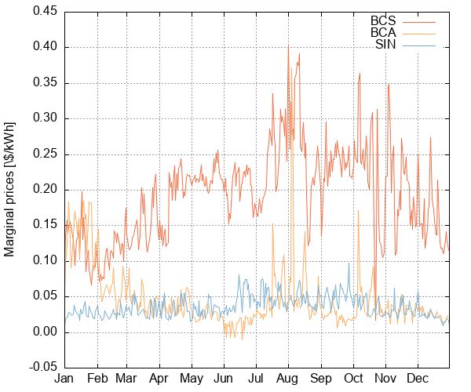
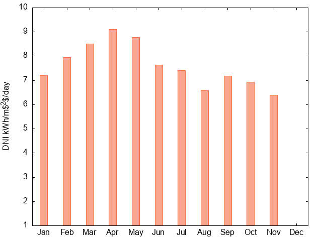
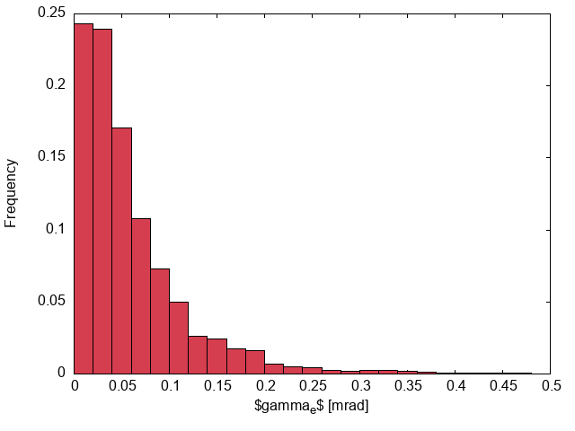

Gnuplot
Introducción
Gnuplot es un programa de línea de comandos que te permite realizar gráficas de una calidad impecable, las cuales tienen la calidad necesaria para ser publicadas en cualquier tipo de revista. Aunque Gnuplot pudiera parecer un programa complicado al inicio, es todo lo contrario, un programa muy amigable con la configuración correcta.
En general Gnuplot te permite graficar un conjunto de datos
Es un curso para usuarios de linux.
Instalación
Para instalar Gnuplot desde la linea de comandos:
## Debbian/Ubuntu sudo apt-get install gnuplot
## Archlinux sudo pacman -S gnuplot
Para macOS puede instalar Homebrew (necesita Xcode), en Windows puede ser una alternativa Windows Subsystem for Linux 2 (WSL2).
También es necesario tener instalado LaTeX
## Archlinux sudo pacman -S texlive
Ejecución
archlinux➜ ᐅ gnuplot
G N U P L O T
Version 6.0 patchlevel 1 last modified 2024-05-13
Copyright (C) 1986-1993, 1998, 2004, 2007-2024
Thomas Williams, Colin Kelley and many others
gnuplot home: http://www.gnuplot.info
faq, bugs, etc: type "help FAQ"
immediate help: type "help" (plot window: hit 'h')
Terminal type is now qt
gnuplot>
Primera gráfica
Para iniciar vamos a utilizar los datos de un archivo llamado "junio.dat", es un archivo separados por tabs, que tiene dos columnas: cenit, acimut.
head ./data/junio.dat
#cenit acimut 66.5503 -104.795100 66.3393 -104.698000 65.2827 -104.213800 64.2238 -103.731600 63.1626 -103.251000 62.0992 -102.771700 61.0337 -102.293500 59.9662 -101.816000 58.8967 -101.338900
Para graficar el archivo en gnuplot únicamente escribimos, previamente hay que ejecutar gnuplot, el siguiente comando:
reset file="./data/junio.dat" plot file using 2:1 with lines

Después de plot se indica entre comillas el nombre del archivo o la ruta, en este caso "./data/junio.dat" , seguido se indica las columnas que se utilizarán para realizar la gráfica using 2:1 2 para el eje de las abscisas y 1 para el eje de las ordenadas. Por último se indica como se dibujaran los puntos, en este caso con una linea with lines.
Titulos y etiquetas
Habiamos graficado la columna dos (acimut) Vs la uno (cenit), no es común gráficar el cenit sino su ángulo complementario, \(\alpha\) por lo que es necesario hacer una operación sobre la columna dos (90-cenit) lo cual es posible hacer en gnuplot. Adicionalmente también es posible agregar etiquetas a los ejes, así como un titulo.
reset set xlabel 'gamma' set ylabel 'alpha' set yrange [0, 90] set grid file="./data/junio.dat" plot file using 2:(90-$1) with lines title "Junio"

PNG
La imagen obtenida puede ser guardada en una imagen png, con el siguiente comando:
set terminal png size 600,500 enhanced font "Helvetica,20" set output './fig/junio.png' replot
Ahora tenemos una gráfica en un archivo png que no tiene la calidad que nosotros deseamos, por lo que en lugar de exportarlo en png, vamos a exportarlo en formato tex de LaTeX. Pero antes es necesario hablar de los script de gnuplo.
Script de Gnuplot
Escribir directamente en la terminal es tedioso, es mejor utilizar un archivo de texto plano en el cual vamos a escribir todas las lineas de comando antes indicadas. La diferencia es que ahora será posible modificar el archivo según sea nuestro interes. Posteriormente los ejecutamos en gnuplot.
Scritp de Gnuplot. Las extensiones que puede tener el archivo son .gnuplot o .gp. En mi caso utilizo una extensión gp para identificar los script de gnuplot. A continuación se muestra el contenido del archivo junio.gp.
reset set xlabel '$\gamma$' set ylabel '$\alpha$' set yrange [0:90] set grid file="./data/junio.dat" plot file using 2:(90-$1) with lines title "Junio"
Ahora podemos entrar a gnuplot y leer el script con el siguiente comando:
load 'junio.gp'

LaTeX
En lugar de exportar la gráfica a un archivo png es posible exportarlo a un archivo LaTeX. A continuación vamos a gráficar
load 'junio.gp' set terminal epsl col sol lw 2 set output 'junio.tex' replot
Ahora tenemos un archivo junio.eps y un archivo junio.tex, para obtener la grafica deseada es necesario crear un pequeño archivo de latex que nos permita compilar …
Ahora tenemos un archivo tex con la gráfica. Esta información ya es posible agregar a un documento de LaTeX, para que nosotros puedamos visualizarla vamos a escribir un prqueño texto de latex que nos permita obtener nuestra gráfica en un pdf.
\documentclass{article} \usepackage{graphicx} \usepackage{color} \usepackage{amsmath} \usepackage{amssymb} \usepackage{xcolor} \usepackage[activeacute, spanish]{babel} \usepackage[utf8x]{inputenc} \usepackage[T1]{fontenc} \definecolor{mWhite}{rgb}{1.0, 1.0, 1.0} \newcommand\white[1]{\textcolor{mWhite}{#1}} \spanishdecimal{.} \renewcommand{\v}[1]{{\boldsymbol #1}} \newcommand{\PROM}[1]{\left\langle #1\right\rangle} \pagestyle{empty} \begin{document} \input{junio.tex} \end{document}
Script gp2pdf
#!/bin/bash #-------------------------------------------------------------------- # SCRIPT: GP2PDF.SH # AUTHOR: ISAIAS MORENO # DATE: 28-Mar-2013 # REV: 2.0 # # PLATFORM: Linux ## #-------------------------------------------------------------------- name=`basename $1` name=${name%.gp} # Ejecuta comandos en Gnuplot echo "load '${name}.gp' set terminal epsl col sol lw 2 set output '${name}.tex' rep" | gnuplot # Genera el archivo fig.tex echo '\documentclass{article}' > fig.tex echo '\usepackage[activeacute, spanish]{babel}' >> fig.tex echo '\usepackage[utf8x]{inputenc}' >> fig.tex echo '\usepackage[T1]{fontenc}' >> fig.tex echo '\usepackage{graphicx}' >> fig.tex echo '\usepackage{color}' >> fig.tex echo '\usepackage{amsmath}' >> fig.tex echo '\usepackage{amssymb}' >> fig.tex echo '\usepackage{xcolor}' >> fig.tex echo '' >> fig.tex echo '\definecolor{mWhite}{rgb}{1.0, 1.0, 1.0}' >> fig.tex echo '\newcommand\white[1]{\textcolor{mWhite}{#1}}' >> fig.tex echo '\renewcommand{\v}[1]{{\boldsymbol #1}}' >> fig.tex echo '\spanishdecimal{.}' >> fig.tex echo '\newcommand{\PROM}[1]{\left\langle #1\right\rangle}' >> fig.tex echo '\pagestyle{empty}' >> fig.tex echo '' >> fig.tex echo '\begin{document}' >> fig.tex echo '\input{'$name'.tex}' >> fig.tex echo '' >> fig.tex echo '\end{document}' >> fig.tex ## Latex to Pdf latex fig dvips -E fig.dvi -o fig.eps epstopdf fig.eps -o "$name".pdf rm "$name".eps ## Recorte del pdf pdfcrop --margins "10 10 10 0" "$name".pdf mv "$name"-crop.pdf "$name".pdf rm "$name".tex rm fig.aux fig.dvi fig.tex fig.log rm fig.pdf fig.eps ##okular "$name".pdf & #######################################################################
| This | is | pdfTeX, | Version | 3.141592653-2.6-1.40.27 | (TeX | Live | 2026/dev/Arch | Linux) | (preloaded | format=latex) | |||
| restricted | \write18 | enabled. | |||||||||||
| entering | extended | mode | |||||||||||
| (./fig.tex | |||||||||||||
| LaTeX2e | patch | level | 2 | ||||||||||
| L3 | programming | layer | |||||||||||
| ! | Text | line | contains | an | invalid | character. | |||||||
| l.2 | ^^@ | ||||||||||||
| sepackage[activeacute, | spanish]{babel} | ||||||||||||
| ? | Type | <return> | to | proceed, | S | to | scroll | future | error | messages, | |||
| R | to | run | without | stopping, | Q | to | run | quietly, | |||||
| I | to | insert | something, | E | to | edit | your | file, | |||||
| H | for | help, | X | to | quit. | ||||||||
| ? | [Using | open | mode] | ||||||||||
| Open | and | visual | must | be | used | interactively | |||||||
| No | pages | of | output. | ||||||||||
| Transcript | written | on | fig.log. | ||||||||||
| PDFCROP | 1.42, | 2023/04/15 | - | Copyright | (c) | 2002-2023 | by | Heiko | Oberdiek, | Oberdiek | Package | Support | Group. |
Agregar permiso de ejecucuón al archivo gp2pdf.sh
chmod +x gp2pdf.sh
Usar el archivo gp2pdf.sh
./gp2pdf.sh junio.gp
Agregar el script gp2pdf al $PATH
Un script del shell puede agregarse a la variable $PATH, al colocar la sigiente linea de texto en el archivo .bashrc, .zshrc o .profile (macOS).
export PATH=$PATH:/home/isaias/Documents/script
Ahora podemos hacer uso del script gp2pdf desde cualquier carpeta.
Editor de texto
El editor de texto que recomiendo es emacs, pero pueden usar con el que se sientan más comodos.
A partir de ahora, únicamente escribiremos scripts de gnuplot.
Comandos básicos de Gnuplot
Etiquetas esenciales
reset set title 'Función sin(x)' set xlabel 'Eje X' set ylabel 'Eje y' set grid f(x) = sin(x) plot [0:2*pi] f(x)

Etiquetas en los ejes (xtics/ytics)
reset set title 'Función sin(x)' set xlabel 'Eje X' set ylabel 'Eje y' f(x) = sin(x) set xtics ("pi/2" pi/2, "pi" pi, "3pi/2" 3*pi/2, "2pi" 2*pi) set ytics 0.4 set grid plot [0:2*pi] f(x)
Es posible remover las etiquetas de los ejes utilizando unset xtics o unset ytics.
Estilos
Test
test
Obtención de datos a partir de una función
Lineas y puntos
reset set key left bottom set xlabel 'Eje X' set ylabel 'Eje y' file='./data/funciones.dat' plot file index 0 using 1:2 with points title "sin(x)",\ file index 1 using 1:2 with linespoints title "cos(x)"

pointtype, pointsize, linewidth
reset set key left bottom set xlabel 'Eje X' set ylabel 'Eje y' file='./data/funciones.dat' plot file index 0 using 1:2 with points pointtype 6 title "sin(x)",\ file index 0 using 1:($2+0.1) with lines linewidth 4 title "sin(x) + pi",\ file index 1 using 1:2 with points pointtype 4 pointsize 0.1 title "cos(x)"
range
reset #set key left bottom set xlabel 'y' set ylabel 'f(x)' set xrange [1:2] set yrange [0.6:1.3] file='./data/funciones.dat' plot file index 0 using 1:2 with linespoints title "sin(x)"

dashtype
Es posible definir tu propio patrón usando una cadena con los siguientes caracteres:
- "-":segmento sólido
- ".":punto
- "_":espacio en blanco
reset set key left bottom set xlabel 'Eje X' set ylabel 'Eje y' file='./data/funciones.dat' plot file index 0 using 1:2 with lines dashtype 2 title "sin(x)",\ file index 1 using 1:2 with lines dashtype "-.._" title "cos(x)"
Formato
reset set key left bottom set format y "%.1f" set format x "%.1f" set xlabel 'x' set ylabel 'f(x)' file='./data/funciones.dat' plot file index 0 using 1:2 with lines title "sin(x)",\ file index 1 using 1:2 with lines title "cos(x)"
Más estilos
set datafile separator ',', archivo separado por comasset size square, gráfica cuadradaset size ratio 1.5, relación de tamaño de los ejes.unset key, elimina las etiquetas de titulosset key- set key left top, mover el titulo a la izquierda (left, right, center) y hacia arriba (top, bottom, center).
- set key out horiz, mover las etiquetas fuera de la caja en horizontal (horiz, vert)
unset border, borra los ejes coordenadosset zeroaxis, coloca los ejes coordenadosunset colorbox, borra la caja de colores
No es necesario
- u, using
- w, with
- l, lines
- p, points
- pt, point type
- ps, point size
- lw, line width
Trabajar con fechas
reset set xdata time set timefmt "%Y-%m-%d" set format x "%b" set title "" set ylabel "sigma [cm]" set xlabel "" file="./data/fecha.dat" plot file using 1:2 w lp ls 5 title 'x', '' using 1:4 w lp ls 6 title 'z'

Intervalo de interés
reset set xdata time set timefmt "%Y-%m-%d" set format x "%d" set title "" set ylabel "sigma [cm]" set xlabel "Días de marzo" file="./data/fecha.dat" set xrange ["2017-03-01":"2017-04-01"] plot file using 1:2 w lp ls 5 title 'x', '' using 1:4 w lp ls 6 title 'z'
 Para conocer los formatos completos de tiempo, revisar Timefmt.
Para conocer los formatos completos de tiempo, revisar Timefmt.
Paletas de Colores
Paletas de grises
less greys.pal
## line styles ## lt -linetype ## lc -linecolor set style line 1 lt 1 lc rgb '#252525' dt 2 # dark grey set style line 2 lt 1 lc rgb '#525252' # set style line 3 lt 1 lc rgb '#737373' # medium grey set style line 4 lt 1 lc rgb '#969696' # set style line 5 lt 1 lc rgb '#BDBDBD' # light grey set style line 6 lt 1 lc rgb '#D9D9D9' # set style line 7 lt 1 lc rgb '#F0F0F0' # set style line 8 lt 1 lc rgb '#FFFFFF' # white set style line 9 lt 1 dt 2 lc rgb '#252525' # dark grey set style line 10 lt 1 dt 3 lc rgb '#252525' # dark grey set style line 11 lt 1 dt 4 lc rgb '#252525' # dark grey set style line 12 lt 1 dt 5 lc rgb '#252525' # dark grey set style line 13 lt 1 dt 6 lc rgb '#252525' # dark grey
reset set key left load "greys.pal" file="./data/parabola.dat" plot file using 1:2 with lines ls 1 lw 1 title "lt 1",\ file using ($1+0.0):2 with lines ls 2 lw 1 title "lt 2",\ file using ($1+1.0):2 with lines ls 3 lw 1 title "lt 3",\ file using ($1+2.0):2 with lines ls 4 lw 1 title "lt 4",\ file using ($1+3.0):2 with lines ls 5 lw 1 title "lt 5",\ file using ($1+4.0):2 with lines ls 6 lw 1 title "lt 6",\ file using ($1+5.0):2 with lines ls 7 lw 1 title "lt 7",\ file using ($1+6.0):2 with lines ls 8 lw 1 title "lt 8" set output
Paletas
Paletas de gnuplot, se descargan y guardan en una carpeta para después leerlas.
set loadpath '/home/isaias/Documents/gnuplot/gnuplot-palettes' MATLAB = "defined (0 0.0 0.0 0.5, \ 1 0.0 0.0 1.0, \ 2 0.0 0.5 1.0, \ 3 0.0 1.0 1.0, \ 4 0.5 1.0 0.5, \ 5 1.0 1.0 0.0, \ 6 1.0 0.5 0.0, \ 7 1.0 0.0 0.0, \ 8 0.5 0.0 0.0 )"
reset load 'paired.pal' set key left bottom set format y "%.1f" set format x "%.1f" set xlabel 'x' set ylabel 'f(x)' file='./data/funciones.dat' plot file index 0 using 1:2 with lines ls 6 title "sin(x)",\ file index 1 using 1:2 with lines ls 7 title "cos(x)"
Tipos de gráficas
Scatterplot (Dispersión)
reset set xlabel 'x' set ylabel 'f(x)' set grid file='./data/scatterplot.dat' set format y "%.1tx10^{%+03T}" plot file with points title ""
Podemos utilizar otro formato.
reset set xlabel 'x' set ylabel 'f(x) \times 10^{-4}' set grid file='./data/scatterplot.dat' set format y "%.1t" plot file with points title ""

Gráficaremos varios archivos y realizaremos operaciones
reset load 'rdylbu.pal' set datafile separator ',' # Pesos a dollar dolar = 17.80 # dolar del año 2023 factor = 0.8240892 # factor de conversión de dolar del 2023 al 2018 p2d(x) = (factor * x/dolar)/1000 # pesos/MWh -> dolar del 2018/kWh set xdata time set timefmt "%Y-%m-%d" set format x "%b" set ytics format "%.2f" set xrange ['2023-01-01':'2023-12-31'] set ylabel 'Marginal prices [\$/kWh]' set grid plot './data/preciosBCSday.csv' using 1:(p2d($3)) with lines ls 2 title 'BCS',\ './data/preciosBCAday.csv' using 1:(p2d($3)) with lines ls 3 title 'BCA',\ './data/preciosSINday.csv' using 1:(p2d($3)) with lines ls 7 title 'SIN'

Boxes
reset load "rdylbu.pal" set datafile separator ',' set style data histogram set style fill solid 1.0 set xtics ("Jan" 1, "Feb" 2, "Mar" 3, "Apr" 4, "May" 5, "Jun" 6, "Jul" 7, "Aug" 8, "Sep" 9, "Oct" 10, "Nov" 11, "Dec" 12) set ylabel 'DNI kWh/m$^2$/day' set yrange [1:10] set xrange [0.5:12.5] file="./data/DNIsam.csv" plot file using ($2/3.6) ls 2 title ''

reset load 'dark2.pal' set datafile separator ',' #set boxwidth 0.9 relative set style data histogram set style fill solid 0.5 set xtics ("Jan" 1, "Feb" 2, "Mar" 3, "Apr" 4, "May" 5, "Jun" 6, "Jul" 7, "Aug" 8, "Sep" 9, "Oct" 10, "Nov" 11, "Dec" 12) #rotate by 45 offset -1.5, -1.2 set ylabel 'DNI kWh/m$^2$/day' set yrange [0:10] set xrange [0:13] set grid plot './data/DNIsam.csv' using ($2/3.6) ls 1 title 'BCS',\ './data/DNIsamHermosillo.csv' using ($2/3.6) ls 2 title 'Hermosillo',
Si tienes una serie de datos que quieres mostrar en un histograma
reset load 'spectral.pal' file="./data/combinacionl.dat" # Each bar is half the (visual) width of its x-range. set boxwidth 0.02 absolute set style fill solid 1.0 border -1 bin_width = 0.02; bin_number(x) = floor(x/bin_width) rounded(x) = bin_width * ( bin_number(x)+0.5 ) set xlabel '$\gamma_e$ [mrad]' set ylabel "Frequency" plot file using (rounded($26)):(N) smooth frequency with boxes ls 1 title ""

reset load 'spectral.pal' file="./data/combinacionl.dat" stats file using 26 name "X" nooutput N=1.0/X_records ## X_records es el n'umero de puntos titulo = sprintf("N = %d", X_records) # Each bar is half the (visual) width of its x-range. set boxwidth 0.02 absolute set style fill solid 1.0 border -1 #set style fill solid 1.0 noborder bin_width = 0.02; bin_number(x) = floor(x/bin_width) rounded(x) = bin_width * ( bin_number(x) + 0.5 ) set xlabel '$\gamma_e$ [mrad]' set ylabel "Frequency" plot file using (rounded($26)):N smooth frequency with boxes ls 1 t titulo
Circle
Barras
Vectores
matrices
reset load 'rdylbu.pal' set palette negative set pm3d implicit at b set view map unset surface set xlabel "" set ylabel "Hora del día" set cblabel "Potencia de Generación [MW]" rot set xrange [0:365] set yrange [0:23] set cbrange [0:50] set ytics 2 unset border set grid set xtics ("Ene" 15, "Feb" 45, "Mar" 75, "Abr" 105, "May" 135, "Jun" 165, "Jul" 195, "Ago" 225, "Sep" 255, "Oct" 285, "Nov" 315, "Dic" 345) #rotate by 45 offset -1.5, -1.2 splot "./data/gen.dat" matrix using 2:1:($3/1000) notitle
Regresión lineal (fit)
Ejes secundarios
reset load 'dark2.pal' set datafile separator ',' data = './data/25.038_-111.660_25.0384_-111.66_psm3-tmy_60_tmy.csv' stats data using 6 skip 3 bins = 50 max = STATS_max min = STATS_min width=(max-min)/bins hist(x,width)=width*floor(x/width)+width/2.0 set boxwidth width*0.9 set style fill solid 0.5 # fill style set grid set xtics 0,100,1000 set y2tics 0,0.1,1 set ytics nomirror set xrange [0:1020] set xlabel 'DNI [W/m$^2$]' set ylabel '\# de datos' set y2label 'CFD' condition="FNR>3" action="if($6 > 0) print " cmd = sprintf("<awk -F ',' '%s {%s}' %s", condition, action, data) plot cmd using (hist($6,width)):(1.0) skip 3 smooth freq w boxes ls 6 notitle,\ './data/DNI_cfd.csv' using 1:2 with lines ls 8 lw 2 notitle axis x1y2
Ciclos (loop)
Filtar datos (awk)
Ejemplo 1
reset set key left set size ratio -1 set xlabel 'X/d' set ylabel 'Z/d' file = './data/derivaDays.dat' condition(y,m,d)=sprintf('/%d-%.2d-%.2d/', y,m,d) action=sprintf(" print ") cmd(y,m,d)= sprintf("<awk '%s {%s}' %s", condition(y,m,d), action, file) set xtics rotate by 90 right set grid set xrange [0.005:0.025] set yrange [-0.025:-0.005] plot cmd(2024,6,21) using ($7/$6):($9/$6) with lines title '21-jun',\ cmd(2024,8,6) using ($7/$6):($9/$6) with lines title '06-ago',\ cmd(2024,8,26) using ($7/$6):($9/$6) with lines title '26-ago',\ cmd(2024,9,13) using ($7/$6):($9/$6) with lines title '13-sep',\ cmd(2024,9,29) using ($7/$6):($9/$6) with lines title '29-sep',\ cmd(2024,10,17) using ($7/$6):($9/$6) with lines title '17-oct',\ cmd(2024,11,6) using ($7/$6):($9/$6) with lines title '06-nov',\ cmd(2024,12,21) using ($7/$6):($9/$6) with lines title '21-dic'

Multiplot
Ejemplo
reset load 'spectral.pal' set datafile columnheader set datafile separator "," set multiplot layout 3,3\ margins 0.1,0.95,0.1,0.95 \ spacing 0.0,0.0 set format y "%.1f" set format x "%.1f" f='./data/outputA.dat' g='./data/driftRealA.dat' condition(y,m,d)=sprintf('/%d-%.2d-%.2d/', y,m,d) action=sprintf(" print ") cmd(y,m,d, file)= sprintf("<awk '%s {%s}' %s", condition(y,m,d), action, file) #set xtics rotate by 90 right set xrange [6.5:9.5] set x2range [6.5:9.5] set yrange [2.0:6.5] set y2range [2.0:6.5] set format y2 "%0.1f" set y2tics 2,1,6 ## 01 unset y2tics unset xtics unset ytics set xlabel '' set ylabel '' set ytics 1 nomirror plot cmd(2024,6,21,f) using 7:9 with lines ls 1 title '21 Jun',\ cmd(2024,6,21,g) using 7:9 with lines ls 1 dt 2 title '$\kappa=$' set x2tics unset ytics plot cmd(2024,8,3,f) using 7:9 with lines ls 2 title '03 Aug',\ cmd(2024,8,3,g) using 7:9 with lines ls 2 dt 2 title '$\kappa$' unset x2tics plot cmd(2024,8,21,f) using 7:9 with lines ls 3 title '21 Aug',\ cmd(2024,8,21,g) using 7:9 with lines ls 3 dt 2 title '$\kappa$' set ylabel 'z [m]' unset ytics plot cmd(2024,9,6,f) using 7:9 with lines ls 4 title '06 Sep',\ cmd(2024,9,6,g) using 7:9 with lines ls 4 dt 2 title '$\kappa$' unset ytics set ylabel '' plot cmd(2024,9,21,f) using 7:9 with lines ls 5 title '21 Sep',\ cmd(2024,9,21,g) using 7:9 with lines ls 5 dt 2 title '$\kappa$' set y2tics plot cmd(2024,10,6,f) using 7:9 with lines ls 6 title '06 Oct',\ cmd(2024,10,6,g) using 7:9 with lines ls 6 dt 2 title '$\kappa$' set xtics nomirror set ytics nomirror unset y2tics plot cmd(2024,10,21,f) using 7:9 with lines ls 7 title '21 Nov',\ cmd(2024,10,21,g) using 7:9 with lines ls 7 dt 2 title '$\kappa$' set xlabel 'x [m]' unset ytics unset xtics plot cmd(2024,11,9,f) using 7:9 with lines ls 8 title '11 Nov',\ cmd(2024,11,9,g) using 7:9 with lines ls 8 dt 2 title '$\kappa$' set xlabel '' set xtics nomirror plot cmd(2024,12,21,f) using 7:9 with lines ls -1 title '21 Dec',\ cmd(2024,12,21,g) using 7:9 with lines ls 0 dt 2 title '$\kappa$' unset multiplot
Gráficas en 3D
Dibujar en gnuplot
reset load 'spectral.pal' set datafile columnheader set key left #set size ratio -1 set xlabel 'x [m]' set ylabel 'z [m]' set format y "%.1f" set format x "%.1f" #set format y "" #set format x "" #set format x "%.3t"#; set ytic(12345) f='./data/driftReal.dat' condition(y,m,d)=sprintf('/%d-%.2d-%.2d/', y,m,d) action=sprintf(" print ") cmd(y,m,d, file)= sprintf("<awk '%s {%s}' %s", condition(y,m,d), action, file) #set xtics rotate by 90 right #set xrange [-2.0:-0.2] #set yrange [-1.2:1.0] set grid #set title "Errores de deriva del 21 de Junio" set label '$\omega=0^\circ$' at 8.32, 5.2362 set label '$\omega=30^\circ$' at 8.48, 5.6018 set object circle at first 8.2826, 5.2362 radius char 0.5 fillcolor rgb 'red' fillstyle solid noborder set object circle at first 8.4402, 5.6018 radius char 0.5 fillcolor rgb 'red' fillstyle solid noborder plot cmd(2024,9,30,f) using 8:10 with lines ls 1 title ''

Animación
Gráficas en tiempo real